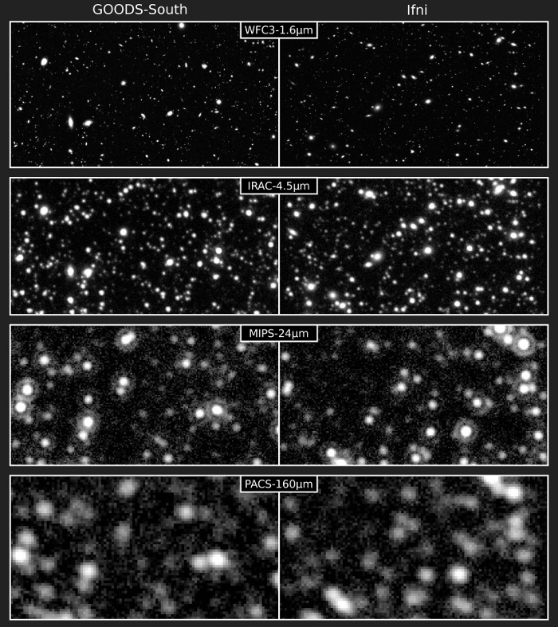

Build your own Universe during the cofee break.
Ifni is a tool to generate mock galaxy catalogs with realistic positions, morphologies and fluxes from the far-ultraviolet to the far-infrared. The process is based exclusively on empirical relations carefully calibrated on state-of-art observations from the deep CANDELS fields, in particular using data from the Hubble-WFC3 camera and Herschel-PACS and SPIRE. The "root" element of the simulation process is the stellar mass of each galaxy, which is used to derive statistically the dust content, star formation rate, optical colors and morphology. The full panchromatic spectrum of the galaxy is generated from this set of parameters, and by construction the resulting flux distributions reproduce accurately the observed ones.
The generated catalogs can be used to produce realistic maps and mock observations to test source extraction codes, or to evaluate the reliability of any map-based science (stacking, dropout identification, ...).
Below is a comparison between real observations from the GOODS-South field (left) and a similar region of the sky simulated with Ifni (right). The Hubble WFC3 F160W and Spitzer IRAC 4.5um images have been created with SkyMaker, while the Spitzer MIPS 24um and Herschel PACS 160um images are built by a custom tool (to be released).

C. Schreiber and the ASTRODEEP collaboration, Ifni: an empirical simulation of the observable Universe, to be submitted.
Ifni is written with the phy++ C++ library.